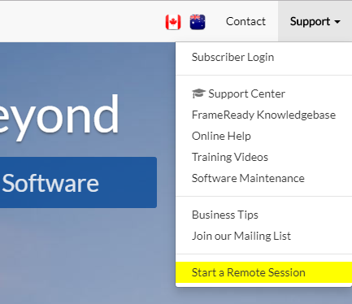
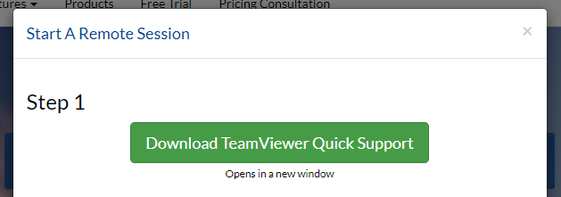
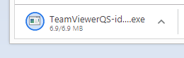
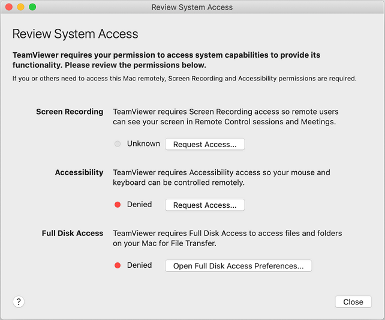
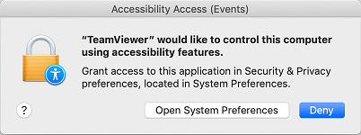
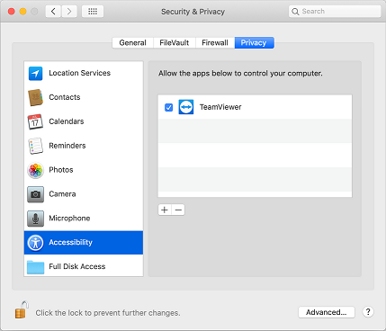
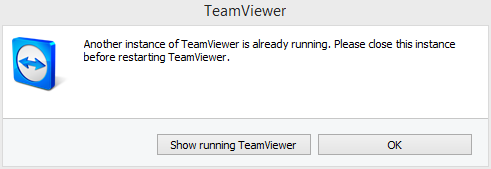
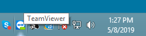
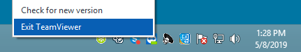

TeamViewer Quick Support
The FrameReady team uses TeamViewer Quick Support software to dial into your computer and share your screen.
How to Start a Remote Session
-
Open a web browser and go to www.frameready.com
-
Click Support (top right) and then click Start a Remote Session.

-
Click the green button to begin the download.

-
When the download is complete, open the file.

How to View your Downloads
Windows
-
In your web browser, press Ctrl + J on your keyboard: you should see a list of recently downloaded files.
-
Locate the file TeamViewer and double-click to open.
macOS Big Sur, Mojave, and Catalina
-
In Chrome, press Ctrl + J on your keyboard.
-
In Safari, press Command + Option + L on your keyboard.
-
In Firefox, press Command + J on your keyboard.
-
Locate the file TeamViewer and double-click to open.
With some versions of macOS, the download is a Zip file and must be unzipped first. Then the unzipped file must be double-clicked.
Continue reading below to allow Team Viewer permission to run.
Opening TeamViewer Quick Support on macOS
-
The Review System Access window appears.

TeamViewer Quick Support requires your permission to access system capabilities to provide its functionality.
Click the Request Access buttons for:
"Screen Recording" and for "Accessibility."
You can skip "Full Disk Access." -
You are prompted with a request: click the Open System Preferences button (and not Deny).

-
When the System Preferences window appears, put a checkmark beside the TeamViewer icon. You may need to first click the yellow padlock icon (lower left) and enter your details to unlock it.

Repeat from Step 5 for both:
"Screen Recording" and for "Accessibility."
TeamViewer: Another instance is already running
Typically only seen on Windows computers
-
When you attempt to open the TeamViewer Quick Support app, a message appears:

-
Click Show running Teamviewer.
-
If nothing appears, then look for the TeamViewer icon in the Windows tray area.

-
Right-click the TeamViewer icon to show the context menu.

-
Click Exit TeamViewer.
-
Open the TeamViewer Quick Support app again.
© 2023 Adatasol, Inc.